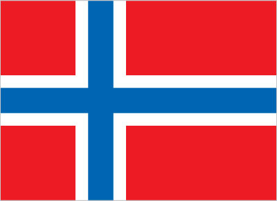

Europe :: SVALBARD
Introduction :: SVALBARD
-
The archipelago may have been first discovered by Norse explorers in the 12th century; the islands served as an international whaling base during the 17th and 18th centuries. Norway's sovereignty was internationally recognized by treaty in 1920, and five years later it officially took over the territory. In the 20th century coal mining started and today a Norwegian and a Russian company are still functioning. Travel between the settlements is accomplished with snowmobiles, aircraft, and boats.
Geography :: SVALBARD
-
Northern Europe, islands between the Arctic Ocean, Barents Sea, Greenland Sea, and Norwegian Sea, north of Norway78 00 N, 20 00 EArctic Regiontotal: 62,045 sq kmland: 62,045 sq kmwater: 0 sq kmnote: includes Spitsbergen and Bjornoya (Bear Island)country comparison to the world: 126slightly smaller than West Virginia0 km3,587 kmterritorial sea: 12 nmcontiguous zone: 24 nmexclusive fishing zone: 200 nmcontinental shelf: extends to depth of exploitationarctic, tempered by warm North Atlantic Current; cool summers, cold winters; North Atlantic Current flows along west and north coasts of Spitsbergen, keeping water open and navigable most of the yearrugged mountains; much of the upland areas are ice covered; west coast clear of ice about half the year; fjords along west and north coastsmean elevation: NAelevation extremes: lowest point: Arctic Ocean 0 mhighest point: Newtontoppen 1,717 mcoal, iron ore, copper, zinc, phosphate, wildlife, fishagricultural land: 0%arable land 0%; permanent crops 0%; permanent pasture 0%forest: 0%other: 100% (2011 est.)the small population is primarily concentrated on the island of Spitsbergen in a handful of settlements on the south side of the Isfjorden, with Longyearbyen being the largestice floes often block the entrance to Bellsund (a transit point for coal export) on the west coast and occasionally make parts of the northeastern coast inaccessible to maritime trafficice floes are a maritime hazard; past exploitation of mammal species (whale, seal, walrus, and polar bear) severely depleted the populations, but a gradual recovery seems to be occurringnorthernmost part of the Kingdom of Norway; consists of nine main islands; glaciers and snowfields cover 60% of the total area; Spitsbergen Island is the site of the Svalbard Global Seed Vault, a seed repository established by the Global Crop Diversity Trust and the Norwegian Government
People and Society :: SVALBARD
-
2,583 (July 2017 est.)country comparison to the world: 230Norwegian 59.8%, Russian and Ukrainian 20.4%, other 19.4% (primarily Swedish, Thai, and Philippine) (2016 est.)Norwegian, Russian-0.03% (2014 est.)country comparison to the world: 201the small population is primarily concentrated on the island of Spitsbergen in a handful of settlements on the south side of the Isfjorden, with Longyearbyen being the largestNAtotal: NAmale: NAfemale: NAtotal population: NAmale: NAfemale: NA (2017 est.)NA
Government :: SVALBARD
-
conventional long form: noneconventional short form: Svalbard (sometimes referred to as Spitsbergen, the largest island in the archipelago)etymology: 12th century Norse accounts speak of the discovery of a "Svalbard" - literally "cold shores" - but they may have referred to Jan Mayen Island or eastern Greenland; the archipelago was traditionally known as Spitsbergen, but Norway renamed it Svalbard in the 1920s when it assumed sovereignty of the islandsterritory of Norway; administered by the Polar Department of the Ministry of Justice, through a governor (sysselmann) residing in Longyearbyen, Spitsbergen; by treaty (9 February 1920), sovereignty was awarded to Norwaynon-self-governing territory of Norwayname: Longyearbyengeographic coordinates: 78 13 N, 15 38 Etime difference: UTC+1 (6 hours ahead of Washington, DC, during Standard Time)daylight saving time: +1hr, begins last Sunday in March; ends last Sunday in Octobernone (territory of Norway)the laws of Norway where applicable apply; only the laws of Norway made explicitly applicable to Svalbard have effect there; the Svalbard Act and the Svalbard Environmental Protection Act, and certain regulations, apply only to Svalbard; the Spitsbergen Treaty and the Svalbard Treaty grant certain rights to citizens and corporations of signatory nations; as of June 2017, 45 nations had ratified the Svalbard Treatysee Norwaychief of state: King HARALD V of Norway (since 17 January 1991); Heir Apparent Crown Prince Haakon MAGNUS, son of the king (born 20 July 1973)head of government: Governor Kjerstin ASKHOLT (since 1 October 2015); Assistant Governor Berit SAGFOSSEN (since 1 April 2016)elections/appointments: none; the monarchy is hereditary; governor and assistant governor responsible to the Polar Department of the Ministry of Justicedescription: unicameral Longyearbyen Community Council (15 seats; members elected by direct vote to serve 4-year-terms); note - the Council acts very much like a Norwegian municipality, responsible for infrastructure and utilities, including power, land-use and community planning, education, and child welfare; however, healthcare services are provided by the stateelections: last held on 6 October 2015 (next to be held in October 2019)election results: seats by party - Conservatives 5, Labor Party 5, Liberals 3, Green Party 2highest court(s): none; note - Svalbard is subordinate to Norway's Nord-Troms District Court and Halogaland Court of Appeal, both located in TromsoSvalbard Conservative Party [Torgeir PRYTZ]Svalbard Green Party [Helga Bardsdatter KRISTIANSEN and Espen Klungseth ROTEVATN]Svalbard Labor Party [Arild OLSEN]Svalbard Liberal Party [Erik BERGER]NAnonethe flag of Norway is usednote: as a territory of Norway, "Ja, vi elsker dette landet" is official (see Norway)
Economy :: SVALBARD
-
Coal mining, tourism, and international research are Svalbard's major industries. Coal mining has historically been the dominant economic activity, and the Treaty of 9 February 1920 gives the 45 countries that so far have ratified the treaty equal rights to exploit mineral deposits, subject to Norwegian regulation. Although US, UK, Dutch, and Swedish coal companies have mined in the past, the only companies still engaging in this are Norwegian and Russian. Low coal prices have forced the Norwegian coal company, Store Norske Spitsbergen Kulkompani, to close one of its two mines and to considerably reduce the activity of the other. Since the 1990s, the tourism and hospitality industry has grown rapidly, and Svalbard now receives 60,000 visitors annually.The settlements on Svalbard were established as company towns, and at their height in the 1950s, the Norwegian state-owned coal company supported nearly 1,000 jobs. Today, only about 300 people work in the mining industry.Goods such as alcohol, tobacco, and vehicles, normally highly taxed on mainland Norway, are considerably cheaper in Svalbard in an effort by the Norwegian government to entice more people to live on the Arctic archipelago. By law, Norway collects only enough taxes to pay for the needs of the local government; none of tax proceeds go to the central government.NA%1,590 (2013)country comparison to the world: 229revenues: $NAexpenditures: $NANA% of GDPNA% of GDP$NA$NANorwegian kroner (NOK) per US dollar -8.3978 (2016)8.0646 (2015)8.0646 (2014 est.)6.3021 (2013 est.)5.82 (2012 est.)
Energy :: SVALBARD
-
194,300 bbl/day (2014 est.)country comparison to the world: 3816,070 bbl/day (2012 est.)country comparison to the world: 540 bbl/day (2012 est.)country comparison to the world: 19380,250 bbl/day (2013 est.)country comparison to the world: 894,488 bbl/day (2012 est.)country comparison to the world: 9718,600 bbl/day (2012 est.)country comparison to the world: 1220 cu m (2013 est.)country comparison to the world: 1980 cu m (2013 est.)country comparison to the world: 1340 cu m (2013 est.)country comparison to the world: 1860 cu m (2013 est.)country comparison to the world: 191
Communications :: SVALBARD
-
general assessment: modern, well-developeddomestic: the Svalbard Satellite Station - connected to the mainland via the Svalbard Undersea Cable System - is the only Arctic ground station that can see low-altitude, polar-orbiting satellites; it provides ground services to more satellites than any other facility in the worldinternational: country code - 47-790; the Svalbard Undersea Cable System is a twin communications cable that connects Svalbard to mainland Norway; the system is the sole telecommunications link to the archipelago (2017)the Norwegian Broadcasting Corporation (NRK) began direct TV transmission to Svalbard via satellite in 1984; Longyearbyen households have access to 3 NRK radio and 2 TV stations (2008).sj
Transportation :: SVALBARD
-
4 (2013)country comparison to the world: 190total: 12,438 to 3,047 m: 1 (2013)total: 3under 914 m: 3 (2013)1 (2013)major seaport(s): Barentsburg, Longyearbyen, Ny-Alesund, Pyramiden
Military and Security :: SVALBARD
-
no regular military forcesSvalbard is a territory of Norway, demilitarized by treaty on 9 February 1920; Norwegian military activity is limited to fisheries surveillance by the Norwegian Coast Guard
Transnational Issues :: SVALBARD
-
despite recent discussions, Russia and Norway dispute their maritime limits in the Barents Sea and Russia's fishing rights beyond Svalbard's territorial limits within the Svalbard Treaty zone